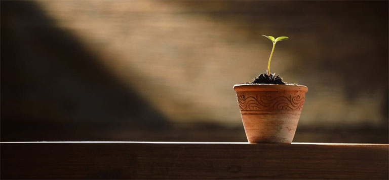

Life is full of beginnings…and one true end.
- Posted: October 15th 2020
I’ve gone back to college. My appetite to learn has risen again. This particular college is Coder Academy, and the course is a bootcamp. Hopefully a pretty intense appearance upskilling and starting my journey as a full-stack developer.
My first day has reminded me of a few things and given me a to-do list:
- update my LinkedIn profile
- unsuspend my Twitter account start
- blogging again (currently doing…)
So….blogging, something I’ve lightly dabbled with in the past, so I deceided to look up my old Tumblr account. Remember…? It used to be a thing. I had some posts I quite like, so for legacy purposes I’ll post a small selection of them here to start (and fill up my profile a little bit, making me look like a little less of a noob.)
#startagain
Back...